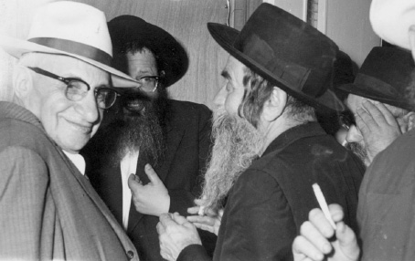

Where Do You Feel at Home?
Stories and sayings from R’ Chaim Shaul Brook a”h as recorded by his close talmid, R’ Chaim Ashkenazi a”h.

WHO CRIES?
When R’ Shaul Brook taught us the maamer “V’Nikdashti,” he explained the section that says that in every Jewish soul there is a spark of fire which needs to be fanned into a flame.
Regarding this, he said that the Dubna Maggid once went to a certain city where a wealthy but miserly man lived. They told the Maggid that it was not worth trying to see this wealthy man because there was no way he would extract any money out of him. Nevertheless, the Dubna Maggid went to see him and asked for money for the poor.
The wealthy man said: If you answer three questions that I will ask you, I will give you the money. The Maggid agreed and the wealthy man asked: Why is it that when you deliver sermons everyone cries? Why don’t you cry? Why don’t I cry?
The Maggid responded with a parable. Why don’t I cry? It’s like a woman who was having difficulty in labor and a midwife was called to help her. Everyone in the laboring woman’s house was crying until the baby was finally born. When they all calmed down, they asked the midwife: How come all of us were crying and only you were calm? She said: If I took to heart every woman who has difficulty in childbirth, I would be left without a heart.
To respond to the question “Why does everyone except the wealthy man cry,” the Maggid told a parable about a man who was traveling in a wagon and a wheel broke. The wagon driver removed the wheel and went with his passenger to a nearby village where they saw the blacksmith blow on the coals. When a flame came out, he soldered the wheel back together. The wagon driver went back to the wagon, connected the wheel and they continued to travel.
On the way, another wheel broke. The wagon driver said to his passenger: Wait here and I will go, once again, to the nearby village in order to have the wheel soldered again. The passenger said: We saw what the blacksmith did. He took a coal and fanned it into a flame. Let us also find a coal and do the same thing. The wagon driver said: Fool, didn’t you realize that inside that coal there was a tiny spark and by blowing it, it turned into a flame? Any coal you would find here wouldn’t have a spark, so how would blowing help?
The Maggid concluded and said to the wealthy man: One who has a spark is moved and cries, and one who does not have a spark does not cry. It seems you don’t have a spark, and therefore my blowing doesn’t affect you at all.
YOU NEED TO SAY THE “LEE” ON YOUR OWN
At farbrengens, R’ Shaul demanded that each of us serve Hashem ourselves and not just get by with what is being demanded of us in yeshiva.
He said: An ignoramus of a chassan stood under the chuppa and the rav told him to repeat after him, word by word: “Harei At Mekudeshes.” And then the rav said, “Nu,” and the chassan said, “Nu.” This kept repeating itself, because the rav could not say the word “lee.” You have to say “lee” (to me) on your own.
WHY DID THE NESHAMA DESCEND?
When R’ Shaul would wake up at night to use the bathroom, he would learn something afterward and only then go back to sleep. He said that the neshama ascends to heaven when we sleep and needs to descend when we wake up. When we go back to sleep, it ascends again and it is asked: Why did you descend? What will the neshama answer – in order to go to the bathroom?
TO SEE AND CRY
R’ Shaul said that in Lubavitch there were volumes of Derech Chaim that had the covers removed, because the mashpia R’ Shmuel Gronem Esterman would cry when he saw Derech Chaim. In his youth, R’ Gronem worked as a porter in a flour mill and in his free time he would learn Derech Chaim. It was so engraved in him that when he saw it, he would cry.
A HALACHIC LENIENCY
R’ Shaul said that one time Maskilim went to the Rebbe Rashab and said it was time to be somewhat more easygoing as far as Torah obligations were concerned, and not to be so stringent. The Rebbe told them he found a Halacha with which they could be lenient. The custom is that when burning fingernails one mixes in three wood matches, and he is prepared to grant them a lenient ruling that two would suffice.
G-D’S ONENESS
R’ Shaul once took a train in Russia with one of the Chassidim (I don’t remember his name). When it came time for Maariv, they began davening while still sitting. When they reached the Shma, R’ Shaul heard the Chassid say the words and then remain silent for a few hours.
R’ Shaul thought the Chassid had fallen asleep, but then he heard him say, “V’Ahavta.” R’ Shaul realized that he had been delving into “Echad” that entire time.
MORNING JOY
R’ Shaul said about his chavrusa in Lubavitch that one could tell when he had recited the bedtime Shma properly. The following day his learning was different than usual.
That is how R’ Shaul explained the verse, “In the evening he lies down with tears, and in the morning [he awakes with] joyful song,” that if you lie down with a Shma said with tears, then in the morning you will have the desire to daven with joy.
HOW TO MAKE YOUR BED
I heard from a Gerrer Chassid (who lived in Rishon L’Tziyon) that R’ Shaul told him before he got married: It says, “The first of your dough [the Hebrew word arisoseichem can also mean a cradle or bed – Ed.] is an offering to Hashem.” When you are getting married, “arisoseichem,” the first thing you need to know is that there is a Ribbono Shel Olam; otherwise, you cannot get married.
This Gerrer Chassid also said that R’ Shaul told him: You think that when you get married you will enjoy life? You should know it’s like a potch – beforehand there was nothing and afterward there is nothing and its entire existence is at the moment of contact.
GEMS FROM R’ SHAUL BROOK
NOT AFRAID OF DEATH
I’m not afraid of the moment of death. I’m afraid of the moment afterward.
THE RIGHT CHESHBON
R’ Shaul would tell about someone who suffered greatly. The sick man said, “The accounts add up but it’s hard to bear.”
WHY ME?
R’ Shaul explained why the Evil Inclination is called a fool when it is actually clever. He said: It has so many people in the world who are ready to listen to it, so why does it come to me?
USE THE TIME
R’ Shaul would say: Why are you sleeping? The time will come when you will sleep and sleep until you get disgusted with sleeping (referring to after 120 years).
BE GRATEFUL
R’ Shaul would say: Give thanks to Hashem for giving you the ability to breathe. Imagine what would happen if the ability to breathe was taken from you for a few minutes; what would become of you?
TO KNOW HOW TO ASK
Once, before we went to Rabbi Shimon bar Yochai in Miron, R’ Shaul asked us: What will you ask for? He finally said: Ask that Hashem give you intelligence and then you will know what to ask for.
TO THE GOOD AND THE BAD
R’ Shaul asked: What is meant by, “It is Your way … to be patient with the wicked ones and the good ones.” Why does He need to be patient with those who are good?
He explained it thus: The wicked is referring to those who know they are bad; the good are those who think they are good.
NO PLEASURE FROM THIS WORLD
R’ Shaul would say that a Chassid needs to know that even if he sees, G-d forbid, that his Avodas Hashem will not bring him to delight in the World to Come, then he must implant in his soul that enjoying this world is certainly out of the question.
WHERE DO YOU FEEL AT HOME?
R’ Shaul would say: There are three “heimen” (the Hebrew word “heim” means they, whereas the same word in Yiddish means home); that is to say three levels that a person can choose as his place of residence.
V’Heim Lo Yod’u Derochoi (they did not know my ways) – the three completely unholy klipos, i.e. evil;
Heim U’Nesheihem (they and their wives) – klipas noga, i.e. worldliness;
Ki heim Chayeinu (for they are our life) – Torah and Mitzvos, i.e. holiness.
NO GREAT LOSS
R’ Shaul would explain the statement of Chazal, “A pity over those who are lost and are not to be found”: a pity for the great men we have lost, whereas those who “are not,” they are the ones that are “to be found.”
Beis Moshiach (staff). "Where Do You Feel at Home?." Beis Moshiach, no. 867 (January 31, 2013).